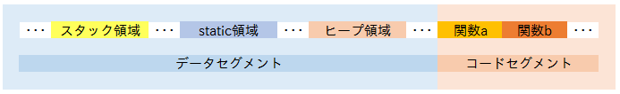

関数ポインタ
これまでデータ(動的配列、配列、変数)へのポインタを使ってきましたが、今度は関数へのポインタです。では関数へのポインターとは一体何でしょうか。
そのことを知るためにはまず関数をどのように呼んでいるかを知る必要があります。

これは一般的な処理系のメモリーの様子を表したものです。というのは別にスタック領域だのヒープ領域だのは一切言語規格には含まれていないからです。
それだと話が進まないので一般的な処理系について今回は見ていきます。
メモリーの様子といっても「プログラムから見える」メモリーです。実際にはOSとCPUが連携してL1～L3キャッシュ、RAM、ページファイルに分散しています。
#include <stdio.h>
#include <stdlib.h>
typedef struct {
char name[20];
int age;
} Animal;
static Animal a1 = { 0 };
Animal a2 = { 0 };
static const int b = 33;
int main(void){
Animal a3 = { 0 };
int a = 32;
Animal* a4 = malloc(1 * sizeof(Animal));
printf("a1:%p, a2:%p, a3:%p, a4:%p, a:%p, b:%p\n",
(void*)&a1, (void*)&a2, (void*)&a3, (void*)a4, (void*)&a, (void*)&b
);
free(a4);
printf("puts:%p\n", puts);
return 0;
}
a1:0x80498d4, a2:0x80498bc, a3:0xbf91dd80, a4:0x98f9008, a:0xbf91dd7c, b:0x80486c4 puts:0x8048440
19行目はもしかしたらコンパイルエラーになるかも。
変数a1, a2, b はstatic領域(勝手に命名)に、変数a3, a はスタック領域に、変数a4の指し示す先はヒープ領域にあるのがわかると思います。
で関数はどこにあるのかというとコード領域にあるのがわかると思います。
ここで抑えておかないといけないことがあります。
関数、つまりその処理の手順ももちろんメモリー上にあるのですが、処理過程でつかう変数とは明確にべつの領域にあります。
もう一度言います、コードとデータは別です。

ここで思い出して欲しいのがこの図です。
関数を呼ぶときは、引数、returnアドレス、ebpがスタックに積まれ、そのあと関数が実行され適宜関数内の自動変数がスタックに積まれるのでした。
returnアドレスとは他でもなくコード領域へのポインタです。
まとめましょう。関数を呼ぶまでには
- スタックに必要なものを積む
- 関数を実行する
という手順を踏んでいます。
ところで変数に型があるように、関数にも型があります。
int puts ( const char * str );
たとえばおなじみputs関数の型は、int(const char*) 型です。ではこの型はなにを表しているのでしょうか？
int num;
ここで振り返るべきは普通の変数です。言うまでもなく変数numの型はint型です。つまりメモリー上にsizeof(int)分のメモリーが確保されるということを意味します。
これを踏まえて関数の型が何を示すのか考えましょう。
・・・考えましたか？
関数の型が表しているのは戻り値と、引数の型および順序です。
つまり、関数呼び出し時にどのようにスタックにデータを書き込むか、という情報です。
まとめます。
関数の型とは、関数を呼び出す手順その1の「スタックに必要なものを積む」ために必要な情報です
話は少し変わります。先ほどの手順2ですが、「関数を実行する」とありました。で、これまでどのように関数を呼び出していたかというと、
puts("arikitari_na_world!");
みたいに、関数名を書けば関数を呼び出せていたと思います。
ところで、先ほど言ったように、関数の実体は(inline展開されない限り)メモリー上のコード領域にあるのでした。
で、コンパイラー(リンカー)はそのアドレスがわかるので、関数名を書くだけで関数をcallできたわけです。
要するに大事なのは関数実体の場所です。そこが分かりさえすれば関数が実行できます。
つまり、そこへのポインタがあれば関数、実行できますよね？
話が長くなりました。関数ポインタとはある関数の実体(コード領域にある)へのポインタです。
関数ポインタも当然型があります。なぜならば、ポインタとは、基本型から派生してできる型だからです。
#include <stdio.h>
int puts ( const char * str );//型はint(const char*)
typedef int(*puts_t1)(const char*);
using puts_t2 = int(*)(const char*);//C++11:alias declaration
int main(){
int (*f1)(const char*) = puts;
puts_t1 f2 = puts;
puts_t2 f3 = puts;
f1("f1");
f2("f2");
f3("f3");
return 0;
}
6, 7, 8行目は全部同じ意味です。
2行目はtypedefしています。新しくできる型名はputs_t1型です。なんとわかりにくい。
3行目はC++11のalias declarationをつかっています。わかりやすい。
このように、Cの文法はちっとも直感的ではないので、alias declarationを使って、型を作ってから使うことを強く推奨します。